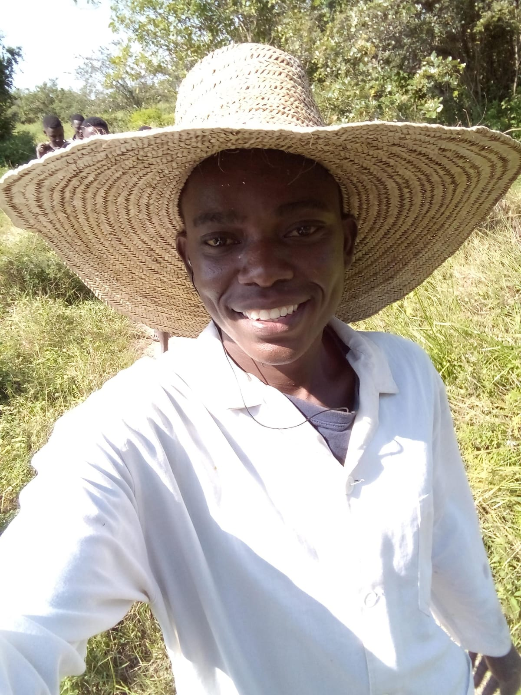

I'm passionate about integrating technology into agriculture to drive innovation, boost productivity, and promote sustainable farming practices. I believe in building smart, data-driven solutions that empower farmers and secure food systems for future generations.
Promoting eco-friendly farming practices
Developing tools to enhance farm productivity
Utilizing analytics for smarter farming